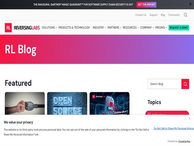
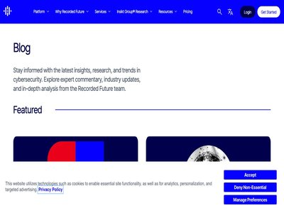

November 11, 2026 · 10 articles

GitHub Package Firewall vs. StepSecurity Secure Registry: Protection beyond npm
November 11, 2026
GitHub’s package firewall covers npm only. StepSecurity's Secure Registry protects 8 ecosystems, traces every install, and blocks malicious packages within an hour (StepSecurity Blog)

Risky Bulletin: France blames Iran for the October supermarket fridge hacks
November 11, 2026
In other news: White House nominates the Palantir CISO for CISA director; another Russian cloud provider gets hacked; N-able takes down cloud platform after zero-day dump. (Risky Business News)

Arista EOS BGP Flaw Scores CVSS 9.8 and Could Drop All Sessions: Fixes Released
November 11, 2026
A stack-based buffer overflow in Arista EOS BGP processing has a CVSS v3.1 score of 9.8. Successful exploitation can drop all BGP sessions and disrupt routing. Exposure depends... (Joho no Todai)

ISC Stormcast For Wednesday, November 11th, 2026 https://isc.sans.edu/podcastdetail/10174, (Wed, Nov 11th)
November 11, 2026
(SANS ISC)
AI Model Backdoor Demonstrated by Changing Seven Neurons: 91.4% Detection and a 9.7% False Positive Rate
November 11, 2026
Microsoft Research demonstrated a dormant backdoor in an AI model by modifying seven neurons. A defensive AI detected 91.4% of modified checkpoints, with a 9.7% false positive r... (Joho no Todai)
MongoDB Patches CVSS 9.5 Unauthenticated RCE in Replica Set Promotion Across Seven Release Lines
November 11, 2026
CVE-2026-118383 is an unauthenticated remote code execution vulnerability in MongoDB replica set promotion. It has a Critical CVSS v4.0 score of 9.5. Fixes are available in seve... (Joho no Todai)

Microsoft Patch Tuesday for November 2026 - Snort rules and prominent vulnerabilities
November 11, 2026
Microsoft has released its monthly security update for November 2026, which includes 1328 vulnerabilities affecting a range of products, including 60 that Microsoft marked as "c... (Cisco Talos)
AI Verifies Signal Encryption With 6.5 Million Lines of Mathematical Proof: Google DeepMind Reports Machine-Code First
November 11, 2026
AI-generated mathematical proofs totaling 6.5 million lines have verified for the first time that compiled machine code for a core encryption technology used by Signal, WhatsApp... (Joho no Todai)
Railway’s Final Breach Report Details Internal Code Theft From Build Infrastructure and About $740,000 in AI Key Abuse
November 11, 2026
Railway's final report, released November 10, lays out the October breach. A flaw in its build infrastructure led to the theft of internal code and ultimately to the decryption... (Joho no Todai)

WordPress Core Time-of-check Time-of-use (TOCTOU) Race Condition Vulnerability
November 11, 2026
What is the Vulnerability? CVE-2026-119977 is a time-of-check time-of-use (TOCTOU) race condition (CWE-367) in WordPress Core that affects the full-package core upgrade process.... (FortiGuard Labs)
November 10, 2026 · 81 articles

Reduce alert fatigue by customizing threat detection features in Amazon GuardDuty
November 10, 2026
The teams responsible for security today don’t have a problem with the number of alerts they receive; they have a problem turning those alerts into something truly actionable. W... (AWS Security Blog)

Detecting sleeper agents hiding in AI model neurons
November 10, 2026
Microsoft Research has released new threat research detailing how a capable agent model could be turned into a sleeper agent by editing fewer than ten neurons to inject a short... (Microsoft Security Blog)
Nitori Breach May Have Exposed Up to 37.62 Million Records, Including Names, Addresses, and Phone Numbers
November 10, 2026
Nitori Holdings said unauthorized access to its systems may have exposed up to 37.62 million personal records. The data includes names, addresses, phone numbers, and dates of bi... (Joho no Todai)
GitHub to Pause Vulnerability Alerts for Repositories With No Pushes for a Year Starting December 8
November 10, 2026
Starting December 8, Dependabot alerts will automatically pause on repositories with no pushes in the past year. The change extends the pause to vulnerability alerts, which cont... (Joho no Todai)
CISA director pick already drawing concern from Hill Dems over Palantir connection
November 10, 2026
Others touted Michael LoSapio as a fit for the job due to his technical credentials as CISO for the company. The post CISA director pick already drawing concern from Hill Dems o... (CyberScoop)

November Patch Tuesday boasts over 1,000 bugs but only one zero-day so far
November 10, 2026
Microsoft admins wail and gnash their teeth (The Register - Security)

November Patch Tuesday: An Overflowing Cornucopia of CVEs
November 10, 2026
Microsoft serves up an actively exploited Outlook zero-day, and a wave of critical Exchange, SharePoint, Windows Search, and LDAP bugs that exhausted defenders need to prioritiz... (Dark Reading)

Railway breach leads to $740,000 in fraudulent AI charges
November 10, 2026
Cloud hosting provider Railway says hackers exploited vulnerabilities in its infrastructure to steal customer authentication secrets and generate approximately $740,000 in fraud... (BleepingComputer)
The US wants its quantum lead to turn into factories and supply chains
November 10, 2026
There’s bipartisan support for further investment in the U.S. quantum industry, along with worries that America’s industrial capacity won’t keep up with demand. The post The US... (CyberScoop)
Ring robots ready to patrol paranoids’ pads
November 10, 2026
Amazon calls its home security drone and business patrol bot 'proactive protection' (The Register - Security)

U.S. CISA adds IBM, SignalWire FreeSwitch, OpenSSH, and GPUStack flaws to its Known Exploited Vulnerabilities catalog
November 10, 2026
U.S. Cybersecurity and Infrastructure Security Agency (CISA) adds IBM, SignalWire FreeSwitch, OpenSSH, and GPUStack flaws to its Known Exploited Vulnerabilities catalog. The U.S... (Security Affairs)
AWS refreshes ProcessUnity Global Risk Exchange assessment to enhance customer’s third-party due diligence
November 10, 2026
Amazon Web Services (AWS) is pleased to announce renewal of the AWS ProcessUnity Global Risk Exchange assessment. This validated assessment report helps customers perform effect... (AWS Security Blog)
Artex: The AI Pen-Test Tool Hackers Turned Into a Weapon
November 10, 2026
Forks of the open source Artex framework, along with 45 similar pen-testing tools, remain capable of executing credential attacks and cloud breaches at machine speed across mult... (Dark Reading)
F-Secure Identifies 26 Ways AI Can Harm Consumers, and Where to Stop Them
November 10, 2026
New AI Harms Taxonomy traces how harm moves through AI systems, from misleading chatbot answers to compromised autonomous agents, and identifies where defenses can intervene. (Dark Reading)

CVE-2026-126087 - Untrusted search path in OpenJD Sessions for Python and the AWS Deadline Cloud worker agent
November 10, 2026
Bulletin ID: 2026-177-AWS Publication Date: 11/10/2026 10:45 AM PST Description: Untrusted search path in the cross-user process launcher in Open Job Description (OpenJD) Sessio... (AWS Security Bulletins)

Hackers Exploit Critical Xen Orchestra Auth Bypass Flaw to Gain Admin Access
November 10, 2026
French software company Vates VMS has warned of a critical security vulnerability in Xen Orchestra that it said is being actively exploited in the wild. The authentication bypas... (The Hacker News)
iOS Sandbox Escape Is Public, and Apple Hasn’t Confirmed a Fix
November 10, 2026
A public iOS sandbox escape could expose wallet keys, Binance warns. No attacks are reported and no fix is confirmed. On 10 November, Binance warned users about a public iOS san... (Security Affairs)
Fireworks AI Confirms Wider Breach Affecting Customer Datasets, Model Weights and Notion AI Chats
November 10, 2026
Fireworks AI disclosed on Monday that its investigation into a security incident first reported early last month uncovered further malicious activity, affecting account and bill... (The Hacker News)

Update Chrome now to fix a flaw attackers are exploiting
November 10, 2026
Google has released Chrome updates for desktop and Android to patch a zero-day vulnerability already being exploited in attacks. (Malwarebytes Labs)
Ransomware threat blares from Vanderbilt University computers during cyberattack
November 10, 2026
BYOD claims extensive data theft as campus Wi-Fi returns, most systems remain restricted, and classes carry on (The Register - Security)

Anthropic Rolls Out Mythos 5.2 With Improved Bug Hunting, Fewer Sandbox Escapes
November 10, 2026
Anthropic says Mythos 5.2 improves vulnerability discovery while showing a lower tendency to escape sandboxes in controlled tests. The post Anthropic Rolls Out Mythos 5.2 With I... (SecurityWeek)
Turla hackers use new Cereal malware to spy on govt Exchange servers
November 10, 2026
The Russian state-backed threat group Turla has been using a new malicious toolset called 'Cereal' to intercept emails on Microsoft Exchange servers at government organizations.... (BleepingComputer)
N-able Takes N-central Offline as Researcher Drops Over 30 Zero-Days
November 10, 2026
Attackers could exploit the flaws for remote code execution, credential theft, and administrator account creation. The post N-able Takes N-central Offline as Researcher Drops Ov... (SecurityWeek)

Microsoft’s Patch Tuesday surpasses 1,000 bugs for second month in a row
November 10, 2026
An exploited Outlook vulnerability drew most of the attention in Microsoft's latest Patch Tuesday, which listed 1,093 bugs total. (The Record)
Checkmarx Appoints Kobi Sivilya as Chief Information Security Officer
November 10, 2026
Sivilya brings deep cybersecurity and technology leadership to Checkmarx as AI transforms software development. (Dark Reading)
How to Assess OT Incident Response Preparedness
November 10, 2026
Cloud Range's free 28-question OT Cyber Readiness Assessment helps organizations identify gaps in operational technology (OT) incident response. (Dark Reading)
Git Patches Flaw That Lets Malicious Repositories Execute Code During Recursive Clones
November 10, 2026
A flaw in Git can let a malicious repository run an attacker's code on a computer that clones it recursively, together with its submodules. The Git project fixed it this week in... (The Hacker News)
Exploited Outlook Zero-Day Among 1,094 Flaws Patched by Microsoft
November 10, 2026
CVE-2026-124194 is the Outlook zero-day for which Microsoft says it’s aware of active exploitation. The post Exploited Outlook Zero-Day Among 1,094 Flaws Patched by Microsoft ap... (SecurityWeek)
SGLang RCE Exploit Breaches NEAR AI, Steals Data From 18 Agents and About 100 Users
November 10, 2026
An attacker exploited a remote code execution flaw in SGLang, an open-source inference engine, and ran code on one of NEAR AI's inference servers last Sunday. The attacker could... (The Hacker News)
Microsoft Patch Tuesday November 2027 , (Tue, Nov 10th)
November 10, 2026
Microsoft continues its AI-induced patch surge, addressing 1,260 different vulnerabilities this month. 68 of these vulnerabilities are considered critical. 167 of the vulnerabil... (SANS ISC)
Barracuda’s email security gateways bitten by make-me-root vulns
November 10, 2026
Someone's fishing for exposed devices (The Register - Security)
AI Coding Agents Leak Thousands of Secrets to GitHub
November 10, 2026
A command in Claude Code inadvertently saves files with credentials and other sensitive data to public Git repositories, creating security gaps for organizations. (Dark Reading)
Windows 11 KB5132061 & KB5131087 cumulative updates released
November 10, 2026
Microsoft has released the Patch Tuesday Windows 11 and cumulative updates for versions 26H2/25H2/24H2 and 23H2 to fix security vulnerabilities and bugs, and add new features. [... (BleepingComputer)
Adobe Patches 110 Vulnerabilities Across 9 Products
November 10, 2026
Adobe has fixed vulnerabilities in AEM, Premiere, Photoshop, After Effects, Connect, Audition, Dimension, Content Credentials SDK, and Media Encoder. The post Adobe Patches 110... (SecurityWeek)
Digital sovereignty at re:Invent 2026: Sessions you won’t want to miss
November 10, 2026
AWS re:Invent returns to Las Vegas for cloud and AI’s biggest week from November 30-December 4, 2026. This year we have over 2,200 sessions, 70 percent of which are interactive,... (AWS Security Blog)

Firefox free VPN drops its 50GB launch cap until January 31
November 10, 2026
Mozilla has removed the data limit on the free VPN built into Firefox. Firefox users in supported regions get unlimited browsing on desktop and Android once they sign in with a... (Help Net Security)
Three China-Nexus Espionage Campaigns Linked Through Sparrow Malware Ecosystem
November 10, 2026
Three distinct threat activity clusters with shared infrastructure and malware code similarities have been observed targeting telecommunications providers, government organizati... (The Hacker News)

Don't just flag it, fix it: How to run CodeMender in your pull requests
November 10, 2026
As many developers use agentic tools to create more code faster than ever before, the code has gotten more complex and they’re taking longer to find and fix software flaws. Help... (Google Cloud Blog)

CISA Expands Incident Reporting Form While CIRCIA Mandate Waits
November 10, 2026
CISA adds MITRE ATT&CK detail to incident reports as CIRCIA rule awaits White House review (Infosecurity Magazine)
Software Transparency Is Changing: Allan Friedman on SBOM, AI BOMs and What Comes Next
November 10, 2026
SBOM pioneer Allan Friedman joined the SecurityWeek Podcast to discuss why knowing what is inside software is only the beginning, how AI is complicating software supply chain vi... (SecurityWeek)
X.Org patches eight server vulnerabilities a month after fixing 12 others
November 10, 2026
X.Org has fixed eight vulnerabilities in the X.Org X server and Xwayland, including one in the Xorg server that lets a malicious monitor corrupt its memory. The fixes ship in xo... (Help Net Security)
Trump taps Palantir security chief to run battered US cyber defense agency
November 10, 2026
Michael LoSapio could inherit a depleted workforce and a political headache or two, courtesy of his current employer (The Register - Security)

How to Evaluate AI Agent Cybersecurity Capabilities
November 10, 2026
A tutorial for building a benchmark for offensive agents, based on how we built the Wiz Cyber Model Arena (Wiz Blog)
Attackers Exploit AhsayCBS Flaws to Deploy Sandbox-Evading Python Backdoor
November 10, 2026
Cybersecurity researchers have disclosed details of an attack that exploited two now-patched vulnerabilities in AhsayCBS to deliver a Python-based implant. The activity, observe... (The Hacker News)
Blind Eagle Uses Fake Court Notices to Deliver Remote Access Trojan Across Latin America
November 10, 2026
The threat actor known as Blind Eagle has resurfaced with a new campaign targeting organizations in Latin America through judicial and administrative-themed phishing lures to de... (The Hacker News)
Fireworks AI gets burned twice as customer data exposure widens
November 10, 2026
Inference biz pins latest breach on cloud provider and LLMJacking miscreants (The Register - Security)
X.Org Server and XWayland Fix Eight Vulnerabilities Following October's 12 Fixes
November 10, 2026
Eight vulnerabilities in X.Org Server and XWayland were disclosed. The fixes are in xorg-server 21.1.26 and xwayland 24.1.15 and cover monitor data, video image transfers, input... (Joho no Todai)
Researcher bypassed Meta smart glasses’ safeguards to run her own code
November 10, 2026
She was able to bypass a safeguard meant to stop unauthorized software running on Meta glasses. It wasn't easy, but showed it is possible. (Malwarebytes Labs)
GitHub Actions Preview Detects Credentials in Workflow Logs and Keeps Alerts After Log Deletion
November 10, 2026
GitHub is previewing enterprise secret scanning for Actions logs after workflows complete. Alerts persist after log deletion. During the preview, GitHub does not send notificati... (Joho no Todai)
Ransomware recovery is now a client retention metric
November 10, 2026
Recovering from ransomware doesn't guarantee an MSP will retain its clients, especially when delays, poor communication, and unexpected costs undermine trust. Kaseya examines ho... (BleepingComputer)
Today: CISO Forum Virtual Summit 2026 - Join Global Cybersecurity Leaders
November 10, 2026
Designed for cybersecurity leaders, this immersive two-day virtual event is your premier destination to discuss, share, and learn innovative risk management and defense strategi... (SecurityWeek)
WhiteMatter Raises $20 Million in Series A Funding
November 10, 2026
The cybersecurity startup deploys a dedicated guardian agent for every AI agent in an organization’s environment. The post WhiteMatter Raises $20 Million in Series A Funding app... (SecurityWeek)

Why Does AI Agent Security in Banking Require More Than Alerts?
November 10, 2026
TL;DR: AI agent security in banking requires controls that can deny prohibited workload actions before they complete, because an alert does not revoke an agent’s authority. An a... (Aqua Security Blog)
SAP Patches Critical ICM2SHELL, ProxyGate Vulnerabilities
November 10, 2026
SAP has published 42 new and updated security advisories, including nine that address critical-severity vulnerabilities. The post SAP Patches Critical ICM2SHELL, ProxyGate Vulne... (SecurityWeek)
AI reverse engineering let researchers add a new feature to Slack
November 10, 2026
Intezer researchers used AI agents to rebuild source code for Slack, Apple’s Finder and a TinyTurla-NG sample, from a backdoor family Cisco Talos attributes to the Turla group.... (Help Net Security)

Introducing JFrog Threat Hub: Turning Vulnerability Intelligence into Blast Radius Analysis
November 10, 2026
A new supply chain attack hits the news. A CVE with a dramatic name starts trending. A malicious package turns up in npm, PyPI, and Hugging Face. Within minutes, your Slack chan... (JFrog Security Research)
Switch 2 Update 23.5.0 Fixes OS Flaw Used in a Jailbreak, Researcher Says
November 10, 2026
Nintendo released update 23.5.0 for Switch 2 and Switch on November 10. A researcher says it fixes a Switch 2 OS vulnerability used in a jailbreak. The update also supports game... (Joho no Todai)
Wiz and ISMAP: Building the Foundation for Japan's Public Sector
November 10, 2026
A transparent look at our gap assessment, our ISO alignment, and our plan to earn a spot on Japan's government cloud service list (Wiz Blog)
Not All That Glitters Is Gold: Tracking CopperDragon’s Sparrow Framework Around the Globe
November 10, 2026
Key Points Introduction Over the past year, Check Point Research investigated a series of intrusion campaigns targeting several dozens of high-profile organizations across Latin... (Check Point Research)
Dreeze raises $33 million to automate recovery of entire cloud applications
November 10, 2026
Dreeze emerged from stealth with $33 million in seed funding and announced the general availability of its Application Revival platform for Amazon Web Services (AWS). Norwest an... (Help Net Security)
Cloud Vulnerabilities Surge Fourfold in Less Than a Year
November 10, 2026
AI is amplifying the impact of vulnerabilities, long-lived credentials and other cloud risks, says Datadog (Infosecurity Magazine)
Cereal Tampers With Exchange Mail Delivery to Collect NATO- and EU-Related Messages
November 10, 2026
Researchers attributed Cereal to the Russia-linked group Turla. The malware collected selected communications on government Exchange servers while mail continued to flow. At a R... (Joho no Todai)
Barracuda Confirms Exploitation of ESG Flaw CVE-2026-116606: Researchers Demonstrate Impact of Chaining It With CVE-2026-111560
November 10, 2026
Barracuda confirmed exploitation of an ESG authentication bypass, CVE-2026-116606. Researchers showed that combining it with a separate command injection flaw can lead to root a... (Joho no Todai)
AI Makes Reverse Engineering Mainstream Software & Malware Far Easier
November 10, 2026
Researchers unpacked, mapped, and recreated complex software and the Turla malware, raising fresh concerns for defenders. (Dark Reading)

See Your Cloud and Coding AI Agents in Context
November 10, 2026
Securing AI in the cloud has historically meant securing models. Teams called Amazon Bedrock or Azure OpenAI, maybe hosted an open model on a GPU instance, and security’s job wa... (Orca Security Blog)
Shadow AI Generated Apps: Find Them in the Cloud and Code You Already Scan
November 10, 2026
The Orca Research Pod recently found that 51% of organizations have adopted AI to build software, yet 81% have critical vulnerabilities in AI packages (Hacker Valley News, 2026)... (Orca Security Blog)
Apple Patches Everyting: November 2026 Edition, (Tue, Nov 10th)
November 10, 2026
(SANS ISC)
IRISSCON 2026 puts preparedness for cyberattacks and hybrid threats in focus
November 10, 2026
Ireland risks being dangerously unprepared for increasingly sophisticated cyberattacks and hybrid threats unless the Government acts urgently to strengthen the country’s nationa... (Help Net Security)
Default Admin Password Let Researchers Unlock and Start Cars
November 10, 2026
Default admin password on automaker login servers let researchers unlock and start test cars (Infosecurity Magazine)

New OpenSSH Vulnerability
November 10, 2026
It’s a bad one , and it’s been in the code for a decade: A newly disclosed flaw involving OpenSSH and musl, dubbed “*sshole,” allows attackers to log in to certain Alpine Linux... (Schneier on Security)
Beyond the Alert: The Case for Rich Network Data
November 10, 2026
At some point your security will fail. This isn’t pessimism. It’s not because your team and tools aren’t sophisticated enough. It’s the reason we have detections in the first pl... (The Hacker News)
Apple Patches iMessage Group Chat Privacy Flaws and Bluetooth Pairing Vulnerabilities
November 10, 2026
An iMessage flaw could let a remote attacker join a group chat and receive its messages, Apple said yesterday, and it released updates to fix it. The updates also fix a separate... (The Hacker News)
Windows settings backup is on by default starting with Windows 11 26H2
November 10, 2026
Starting with Windows 11, version 26H2, Windows settings backup will switch on by default on eligible devices. The company renamed the feature, which launched in August 2025 as... (Help Net Security)
Binance Investigates ShinyHunters Breach Claims
November 10, 2026
Cryptocurrency exchange Binance says ShinyHunters’ breach claims appear to be a scam (Infosecurity Magazine)

The AI Cyberattack Surge Hasn't Arrived. But the Warning Signs Are Growing.
November 10, 2026
New ReversingLabs data finds that LLM API references in malicious files remain uncommon even as their counts rise. The clearest signals are in specific attack steps-not an auton... (ReversingLabs Blog)
What a security leader should tell the CEO about leaked credentials
November 10, 2026
In this Help Net Security interview, Eric Fourrier, CEO of GitGuardian, talks about leaked credentials and personal liability for security leaders and boards. He explains how fe... (Help Net Security)
Security teams want to spot unusual AI agent behavior while they’re still defining normal
November 10, 2026
AI agents topped the list of planned investments in behavioral monitoring in Abnormal AI’s 2026 State of Behavioral Security Report. Asked where their organizations would invest... (Help Net Security)
Anthropic's super bug-finding Mythos model is going into Cisco and IBM products
November 10, 2026
Enterprise security tools will offer its capabilities without handing customers the model itself (The Register - Security)
OT Refrigeration Control Systems Attack
November 10, 2026
What is the Attack? November 2, 2026 Update: A new wave of suspected cyberattacks has affected supermarket refrigeration systems across several European countries, including Swe... (FortiGuard Labs)

DoppelCart Fraud Network Grows to More Than 250,000 Domains
November 10, 2026
Explore DoppelCart, a 260K+ domain shopping fraud network impersonating global brands, utilizing shared infrastructure and Medusa. (Recorded Future)
GhostFrame: A new ESXi Implant Linked to Settra Ransomware
November 10, 2026
GhostFrame is a new post-exploitation framework targeting VMware ESXi environments, linked to TAG-218 and Settra ransomware. (Recorded Future)
November 09, 2026 · 29 articles

N-able Disables Cloud Services Following Disclosure of "Able2Shell" Exploit Chains
November 09, 2026
N-able took N-central offline after 33 critical flaws were disclosed, including chains enabling remote code execution and privilege escalation. (Huntress Blog)
New Supply Chain Attack Compromises Tens of Thousands of GitHub Repositories
November 09, 2026
Security researchers have detected a malicious workflow affecting tens of thousands of GitHub repositories, including Uber-owned ones (Infosecurity Magazine)
AI Security
November 09, 2026
Two weeks ago, I attended the [un]prompted AI security conference in San Francisco. It was an excellent event: three days of very dense talks about all aspects of AI security. (... (Schneier on Security)
AI doesn’t have to go rogue to break the world
November 09, 2026
AI systems are learning to exploit loopholes in everything from software to tax law. The biggest threat may not be malicious intent, but machines doing exactly what we ask. The... (CyberScoop)
Crédit Mutuel Arkéa Targeted in Reported $133m Heist
November 09, 2026
French co-operative bank Crédit Mutuel Arkéa has reported a cyber-attack enabling fraudulent transactions (Infosecurity Magazine)
LNbits Urges All Operators to Shut Down Their Bitcoin Lightning Wallet Servers Amid Attacks
November 09, 2026
Everyone running LNbits, a free, open-source Bitcoin Lightning wallet system, should shut down their servers now because of a wave of attacks, the project said yesterday. It has... (The Hacker News)
Anti-Money Laundering Watchdog FATF Targets Scam Compounds
November 09, 2026
AML body the Financial Action Task Force has suggested new ways to disrupt scam compounds (Infosecurity Magazine)
Taiwan-Based Hacker Used BOSSAI AI Agents to Steal Taipei Emergency Dispatch Records
November 09, 2026
A single attacker using AI agents pulled emergency dispatch records covering seven Taipei districts, researchers at Acronis's Threat Research Unit said last week. The agents als... (The Hacker News)
U.S. Agencies Warn Refrigeration Controller Attacks Could Cause Fires and Inventory Losses
November 09, 2026
U.S. government agencies have warned that threat actors are actively targeting industrial refrigeration and cold-chain monitoring systems globally with an aim to cause service d... (The Hacker News)
Linus Torvalds sees signs AI-prompted patch flood has peaked
November 09, 2026
Fixes are arriving faster than new bug reports for one major Linux project (The Register - Security)
Risky Bulletin: Pro-Kremlin hacktivists dox EU politicians, law enforcement
November 09, 2026
In other news: US arrests an AI deepfake gang; SonicWall patches a zero-day; SSHhole is now being exploited in the wild. (Risky Business News)
People Are Getting Weird About AI
November 09, 2026
Dark Reading Confidential Episode 22: You can love AI without being blind to cybersecurity being sacrificed for utility. (Dark Reading)
13.3 million people’s medical data exposed; companies pay $300,000
November 09, 2026
The New York AG reached a settlement with Perry Johnson & Associates and four related companies over a 2023 breach. (Malwarebytes Labs)
Fake GitHub Security Tools Infect Over 2,000 PCs With Malware
November 09, 2026
Fake GitHub security tools are spreading malware that disables defenses, steals sensitive data and infects over 2,000 PCs. Cybersecurity firm Doctor Web has found malware hidden... (Security Affairs)
Researchers pwn automakers’ Android apps to remotely unlock cars, honk horns
November 09, 2026
Pair of researchers chain WAF bypasses and default logins to command vehicles in Australia and the US (The Register - Security)
Ukraine arrests four in $5 million crypto scam targeting Germans
November 09, 2026
Ukraine's cyber police said the four arrested men included the alleged leader of the scam call centers. (The Record)
QNAP Warns Users as Plex2Shell Flaws Are Used to Hack NAS Devices
November 09, 2026
Taiwanese vendor QNAP urges users to update Plex Media Server after reports of NAS compromises through the Plex2Shell vulnerability chain. QNAP urges users to update Plex Media... (Security Affairs)
FBI agent stole $2.5 million in crypto from hackers under investigation
November 09, 2026
A former FBI agent has pleaded guilty to stealing nearly $2.5 million from the wallets of fraud victims and nation-state hackers under investigation. [...] (BleepingComputer)
Sasha Roshan Takes Security Education Beyond the Demo
November 09, 2026
Meet Sasha Roshan, Senior Sales Engineer at Huntress, a passionate advocate for cybersecurity. See how he makes a difference every day. (Huntress Blog)
A week in security (November 2 - November 8)
November 09, 2026
A list of topics we covered in the week of November 2 to November 8 of 2026 (Malwarebytes Labs)
Trusted by Default: Qubole Cross-Account Access Abused in the Wild
November 09, 2026
A threat actor used IAM credentials from Qubole's AWS account to assume integration roles in customer AWS environments. Here's what we observed and how to hunt for it. (Wiz Blog)
Microsoft Fixes RCE Bug in Windows Paint After Weeks of Confusion
November 09, 2026
Last month, Microsoft disclosed a vulnerability in Microsoft Paint, but messaging regarding a patch was unclear. (Dark Reading)
Data breach at hearing aid giant Amplifon impacts thousands
November 09, 2026
The U.S arm of international hearing aid company Amplifon has been notifying customers about a data breach early this year that included medical information. (The Record)
Attackers backdoor trusted AWS integrations to steal secrets
November 09, 2026
Wiz researchers uncovered the secret-stealing supply-chain attack (The Register - Security)
Help defend against memory poisoning in Amazon Bedrock AgentCore with multi-layer write validation
November 09, 2026
Amazon Bedrock AgentCore Memory helps AI agents maintain context across sessions through persistent short-term and long-term memory. Because memory content is automatically retr... (AWS Security Blog)
Russian cloud firm Beget rebuilds from scratch after data wiper attack
November 09, 2026
A data-wiping malware attack has forced Russian cloud services provider Beget to rebuild its cloud infrastructure from scratch, the company said. [...] (BleepingComputer)
PwC's CISO on AI, Robots & What's Next for Security
November 09, 2026
As AI accelerates change across the enterprise, PwC's James Shira explains why security teams must rethink their approach to risk and adapt their strategies. (Dark Reading)
9th November - Threat Intelligence Report
November 09, 2026
For the latest discoveries in cyber research for the week of 9th November, please download our Threat Intelligence Bulletin. TOP ATTACKS AND BREACHES Queens Public Library, a Ne... (Check Point Research)
Simplify cross-partition access with AWS IAM outbound identity federation
November 09, 2026
You can now use tokens from AWS Identity and Access Management (IAM) outbound federation to assume roles in other Amazon Web Services (AWS) partitions. When your workloads run a... (AWS Security Blog)